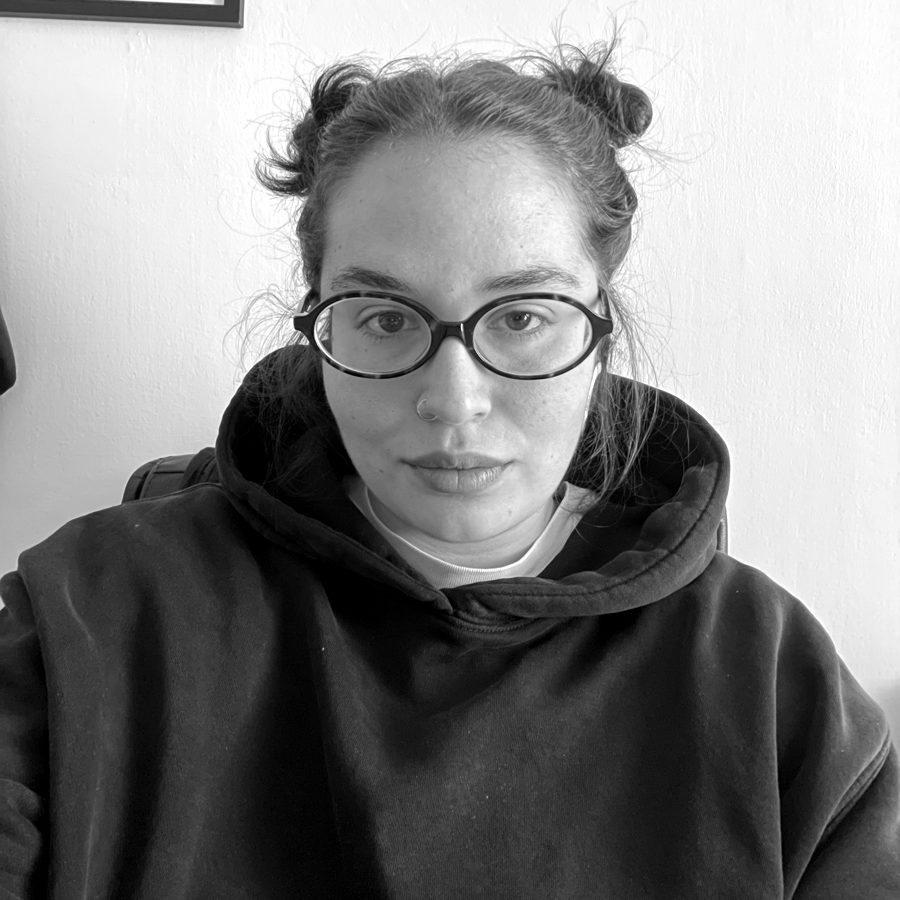

Cultural producer
chi sta tra l'idea e il pubblico
Chi fa produzione culturale traduce una visione artistica in cose che accadono: calendario, persone, spazi, risorse, comunicazione. Custodisce l'idea finché non arriva davanti a qualcuno, intatta.
Cultural producer. Costruisco un'idea, poi la faccio funzionare.

Ho lavorato su progetti in tutte le loro fasi, dal brief alla consegna, dal concept alla serata. Conoscere i processi da più punti di vista mi permette di leggere tempi e complessità prima che diventino problemi, e di coordinare persone diverse con consapevolezza.
Mi sono formata all'Accademia di Belle Arti di Napoli, dalla triennale in Nuove Tecnologie dell'Arte alla magistrale in New Media Art, e prima ancora nella scenografia: so come si monta uno spazio, non solo come si racconta.
So costruire un'idea.
E farla funzionare.
2026 — oggi
Corticom
Relazione con i clienti e coordinamento dei progetti.
2024 — 2025
Renna Creative Agency
2022 — 2023
Visit Irpinia, start-up
2018 — 2022
Accademia di Belle Arti di Napoli
Il mio apprendistato: quattro anni dentro progetti culturali veri con l'Accademia, da Procida Capitale Italiana della Cultura 2022 a cinque edizioni di #CuoreDiNapoli, mentre studiavo. Lì ho imparato come funziona una macchina culturale guardandola lavorare da dentro.
…e da cui mi sono fatta abitare.
chi sta tra l'idea e il pubblico
Chi fa produzione culturale traduce una visione artistica in cose che accadono: calendario, persone, spazi, risorse, comunicazione. Custodisce l'idea finché non arriva davanti a qualcuno, intatta.
È il lavoro che ho fatto in ogni ruolo, anche quando si chiamava in un altro modo.
Capisco cosa serve davvero, a chi, con quali tempi e quali risorse.
Direzione artistica e supervisione visiva: l'idea prende una forma riconoscibile.
Artisti, team creativo, clienti. Coordino gruppi multidisciplinari e tengo tutti sulla stessa linea.
Produzione, shooting, contenuti grafici, social e copy. Problem solving fino all'ultimo minuto.
Laurea magistrale in New Media Art, Accademia di Belle Arti di Napoli. Laurea triennale in Nuove Tecnologie dell'Arte, Accademia di Belle Arti di Napoli (2018–2022). Diploma di Scenografia, Liceo Artistico “P.A. De Luca”, Avellino. Italiano madrelingua, inglese base.